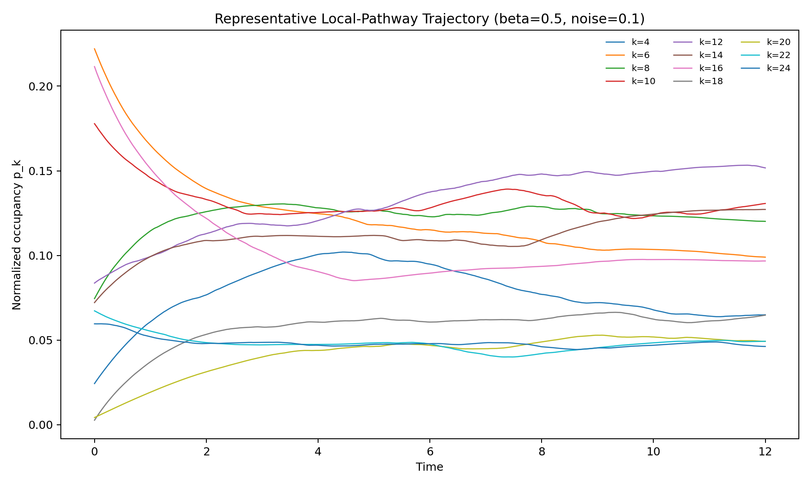
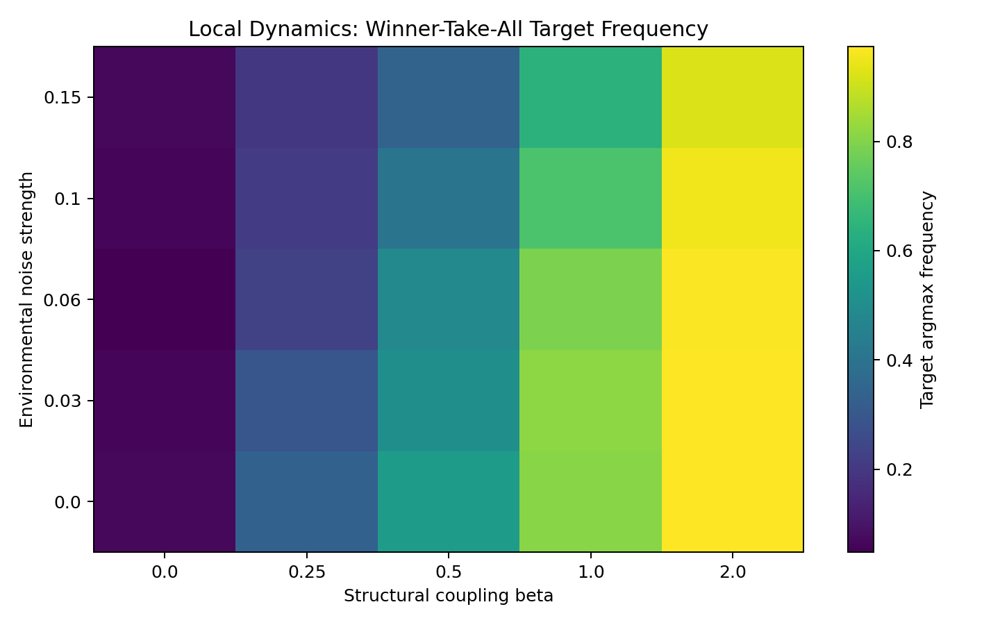
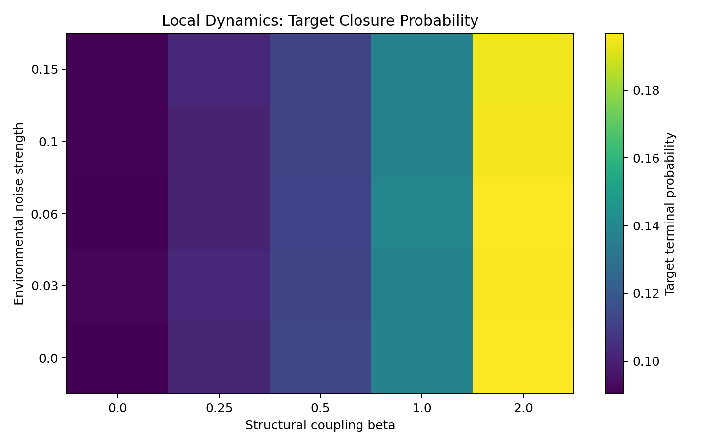
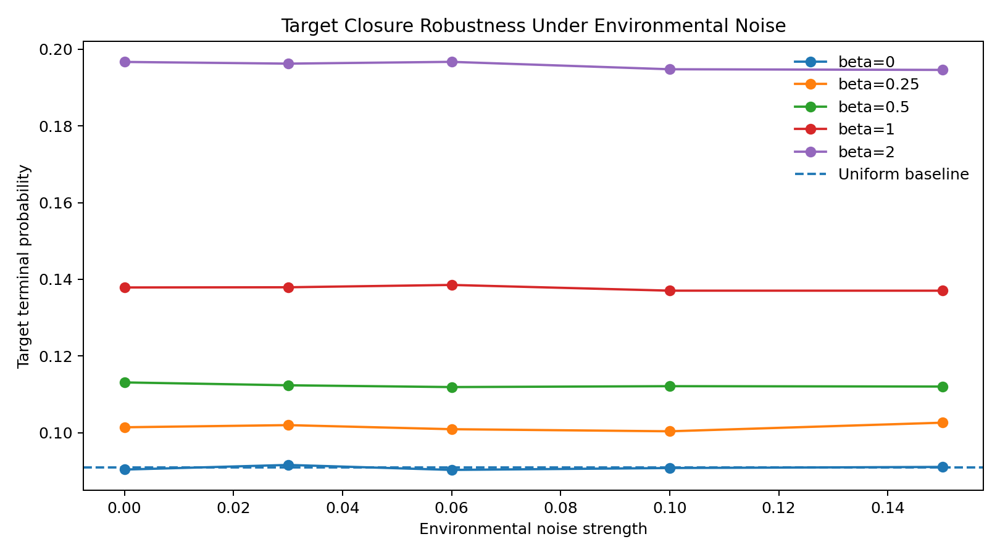

Entry 03
Local Pathway Dynamics and Robustness Scan
Purpose Entry 02 showed that an all-to-all transition network makes the structural minimum dominate too easily. Entry 03 tests a less trivial dynamical topology:
entry_03
Outputs folder: output
Figures
Click any figure to enlarge it.

representative_trajectory.png
{kind=link}

target_argmax_heatmap.png
{kind=link}

target_probability_heatmap.png
{kind=link}

target_probability_vs_noise.png
{kind=link}
Tables
Embedded previews of CSV/TSV outputs with links to the full raw files.
| beta | noise_strength | k | mean_terminal_occupancy | argmax_frequency | mean_residence |
|---|---|---|---|---|---|
| 0.0 | 0.0 | 4 | 0.0920974242784595 | 0.286 | 1.1173590525523478 |
| 0.0 | 0.0 | 6 | 0.09174486868910511 | 0.017333333333333333 | 1.1070795904884232 |
| 0.0 | 0.0 | 8 | 0.09120824781498532 | 0.03866666666666667 | 1.0873011741013514 |
| 0.0 | 0.0 | 10 | 0.09070394994052416 | 0.059333333333333335 | 1.0801833795782916 |
| 0.0 | 0.0 | 12 | 0.09036698413880295 | 0.06866666666666667 | 1.084418643144578 |
| 0.0 | 0.0 | 14 | 0.09022278345842141 | 0.076 | 1.0778437997031358 |
Preview only — rows truncated. Open full file
| beta | noise_strength | detected_target_k | target_terminal_probability | target_argmax_frequency | target_gain_over_uniform | mean_initial_entropy | mean_final_entropy | … |
|---|---|---|---|---|---|---|---|---|
| 0.0 | 0.0 | 12 | 0.09036698413880295 | 0.06866666666666667 | 0.9940368255268325 | 2.020982681587737 | 2.3638657328318127 | … |
| 0.0 | 0.03 | 12 | 0.0915746484273363 | 0.064 | 1.0073211327006992 | 2.0257468118672746 | 2.364476983281441 | … |
| 0.0 | 0.06 | 12 | 0.09027867288388412 | 0.048 | 0.9930654017227253 | 2.017383022262836 | 2.3609814716809625 | … |
| 0.0 | 0.1 | 12 | 0.09077116882566362 | 0.064 | 0.9984828570822998 | 2.0290729349572976 | 2.357166489650332 | … |
| 0.0 | 0.15 | 12 | 0.09105607139149892 | 0.068 | 1.0016167853064881 | 2.0208156788227765 | 2.348134794736551 | … |
| 0.25 | 0.0 | 12 | 0.10139912398467672 | 0.336 | 1.115390363831444 | 2.028611812979732 | 2.3659351584091683 | … |
Preview only — columns truncated, rows truncated. Open full file
| time | closure_entropy |
|---|---|
| 0.0 | 2.0398614984874204 |
| 0.04 | 2.05853792618777 |
| 0.08 | 2.075399412802792 |
| 0.12 | 2.0906355338635514 |
| 0.16 | 2.1046511790619533 |
| 0.2 | 2.117605396838288 |
Preview only — rows truncated. Open full file
| time | k_4 | k_6 | k_8 | k_10 | k_12 | k_14 | k_16 | … |
|---|---|---|---|---|---|---|---|---|
| 0.0 | 0.024317739914833433 | 0.22207151248722268 | 0.07451838534808408 | 0.1778489308893264 | 0.08368201952676584 | 0.0721479065515131 | 0.21156867798219367 | … |
| 0.04 | 0.02623923595001131 | 0.21878470955543047 | 0.07693835603166325 | 0.17600468825479865 | 0.08466889583022259 | 0.07374338459709177 | 0.20787235334585166 | … |
| 0.08 | 0.02810827323615591 | 0.21549792773750168 | 0.0793146300214501 | 0.17404409824266956 | 0.08557432213048392 | 0.07527735900357944 | 0.20452132469211978 | … |
| 0.12 | 0.029902224591730833 | 0.21233624387681937 | 0.08162796072792416 | 0.17227156756159026 | 0.08633295924938934 | 0.07675375142011993 | 0.20128856254920985 | … |
| 0.16 | 0.03167113003480834 | 0.2093038131162128 | 0.08386932621463855 | 0.1704703463941329 | 0.08711216632330031 | 0.07818555393626367 | 0.1981780290201773 | … |
| 0.2 | 0.033401821353370185 | 0.20637196449885534 | 0.08601950409439252 | 0.16874376058898852 | 0.08789747969087906 | 0.07953711107382791 | 0.19516224101569463 | … |
Preview only — columns truncated, rows truncated. Open full file
| k | F_k | pair_count_k2 | candidate_score_Bk |
|---|---|---|---|
| 4 | 3 | 16 | 0.6842105263157895 |
| 6 | 8 | 36 | 0.6363636363636364 |
| 8 | 21 | 64 | 0.5058823529411764 |
| 10 | 55 | 100 | 0.2903225806451613 |
| 12 | 144 | 144 | 0.0 |
| 14 | 377 | 196 | 0.3158813263525305 |
Preview only — rows truncated. Open full file
Source files
Theoretical notes
No files in this category.
Data files
No files in this category.
Other artifacts
No files in this category.